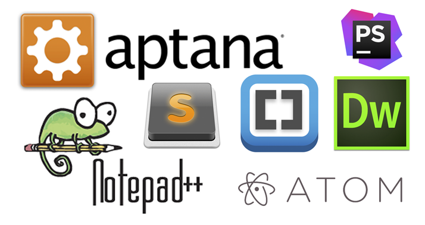

4.- Entornos de desarrollo web.
Caso práctico

Juan sabe que el desarrollo de aplicaciones web requiere un esfuerzo, pero que existen software que pueden ayudar en el proceso, y está decidido a usarlos. A por ellos!
La programación y el desarrollo web en sus inicios, se basaba en un bloc de notas que a partir de código básado en etiquetas, generaba un archivo interpretado que los navegadores podían entender. La cantidad de lenguajes web actuales, así como la implantación total de la web hace necesario el apoyo en herramientas que permitan facilitar el desarrollo.
Por este motivo existen multitud de entornos de desarrollo destinados al desarrollo web. A lo largo de este epígrafe vamos a hacer un recorrido por los IDE más utilizados en la actualidad.

. Logotipos de varios IDE orientados al diseño web (CC0)